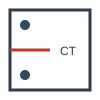
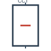

Phase-Field Fatigue Suite
A professional, high-fidelity 3D multi-physics suite for advanced fracture mechanics and environmental fatigue analysis.
Designed and Developed by Mohammed Maniruzzaman, this suite provides a unified research environment for simulating complex crack initiation and propagation in 3D metallic components.
Core Capabilities
- 3D Variational Solver: High-resolution staggered iterative solver for coupled displacement-damage fields.
- Hydrogen Embrittlement: Fully coupled HEDE (Decohesion) and stress-assisted mass transport models.
- Automated DOE: Grid-search batch processor for parametric sensitivity studies.
- Scientific J-Integral: Numerical domain integration for precise \(K\) and \(\Delta K\) extraction.
Supported Specimen Geometries

CT
Compact Tension
SENB
Bending Notch

CCT
Center Cracked
Licensing
Released under the MIT License. (C) 2026 Mohammed Maniruzzaman.
New to PF-Fatigue?
Start with the Installation Guide to set up your FEniCSx environment, then follow the App Walkthrough.